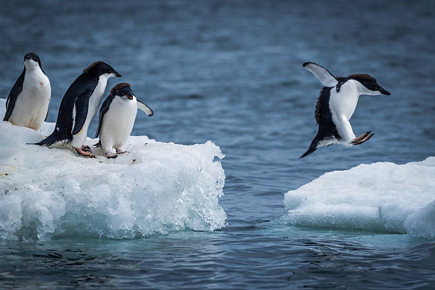

Bem-vindo à Enciclopédia dos Pinguins
O pinguim é uma ave pertencente à ordem Sphenisciformes, distribuída do continente Antártico até as ilhas Galápagos. Atualmente são descritas 18 espécies de pinguins, sendo todas elas incapazes de voar, mas excelentes nadadoras. Esses animais apresentam como adaptações ao nado a ausência de ossos pneumáticos, corpo com formato hidrodinâmico, presença de membranas interdigitais nas patas e asas adaptadas para a natação. Pinguins são aves e, portanto, apresentam características típicas desse grupo de animais, tais como a presença de penas e a ausência de dentes. A maioria das espécies de pinguins apresenta a coloração preta e branca, que ajuda na camuflagem. Esses animais servem de presa para focas, baleias, leões-marinhos e tubarões. Alimentam-se de pequenos peixes, crustáceos e moluscos, como lulas e polvos.
Acompanhe os pinguins em seu habitat natural!
A Global Penguin Society realiza o rastreamento via GPS dessas aves incríveis, permitindo que cientistas e o público explorem suas rotas de migração, comportamento e áreas de preservação.
Clique na imagem ao lado para visitar a página oficial e descobrir mais.